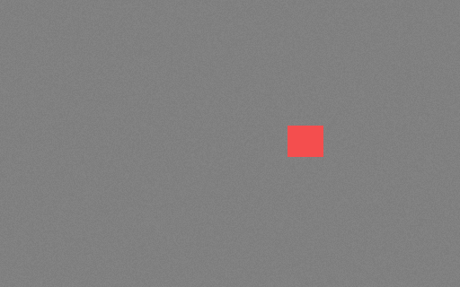
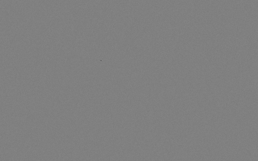

surface-01.png
执行 Completed / 自动 Pass / 最终 Pass
512×320 px，缺陷 0 px，0 个区域
输入 SHA-256：cff00d4e8a163d9dbb0a246037e41a42e5eb856d4709216301f836490aaa7719
人工复核状态 Unreviewed / 版本 0

检测链 97.913 ms（校验输入、解码至证据写入；不含队列/初始化/数据库提交），32 logical processors
批次 e52afec926c3474a8d8742014f5a7e6b · Completed · Cpu
配方：均匀表面 · 灰度与局部对比 / 9520bdb60e2f95a5；创建时间 2026-11-20T15:25:57.4829899+00:00；应用 0.12.0
后端初始化（含模型编译，如适用）：1.548 ms；每项检测链另计。
输入：确定性合成演示，不代表真实工业精度。检测单位为像素；未进行物理尺寸标定。
最终结果：合格 3 / 缺陷 2 / 待复核 1。失败/取消项保留待复核。
人工复核：已确认 0 / 可复核 6；无记录 5，人工暂缓 1，未完成/失败 0，与机器结论不同 0。检测完成和机器预测不代表人工确认；暂缓项仍待处理。
执行 Completed / 自动 Pass / 最终 Pass
512×320 px，缺陷 0 px，0 个区域
输入 SHA-256：cff00d4e8a163d9dbb0a246037e41a42e5eb856d4709216301f836490aaa7719
人工复核状态 Unreviewed / 版本 0
检测链 97.913 ms（校验输入、解码至证据写入；不含队列/初始化/数据库提交），32 logical processors
执行 Completed / 自动 Defect / 最终 NeedsReview
512×320 px，缺陷 1295 px，1 个区域
输入 SHA-256：00da24fbc80e79b1a8d02f35df348074eb8ea853dc24ed39f08b23ea36522ae7
人工复核状态 Deferred / 版本 1

检测链 72.096 ms（校验输入、解码至证据写入；不含队列/初始化/数据库提交），32 logical processors
复核 #1 · smoke-test · 2026-11-20T15:26:00.1876137+00:00 · NeedsReview：HTTP smoke verification
执行 Completed / 自动 Defect / 最终 Defect
512×320 px，缺陷 1400 px，1 个区域
输入 SHA-256：e9dc746cc2e6918c6a44eb7fc809cf3e0118b617980e376e871ca60a47b77a6b
人工复核状态 Unreviewed / 版本 0

检测链 71.444 ms（校验输入、解码至证据写入；不含队列/初始化/数据库提交），32 logical processors
执行 Completed / 自动 Pass / 最终 Pass
512×320 px，缺陷 0 px，0 个区域
输入 SHA-256：6c21d3b4afefe503b81aa7ce360b0c63e779913f1308bb0c4c236df4f9d4c536
人工复核状态 Unreviewed / 版本 0

检测链 77.316 ms（校验输入、解码至证据写入；不含队列/初始化/数据库提交），32 logical processors
执行 Completed / 自动 Defect / 最终 Defect
512×320 px，缺陷 2695 px，2 个区域
输入 SHA-256：7baaa6eafc72c3890691522a4d040d5fa95f0c786b334b499d61140b9485a772
人工复核状态 Unreviewed / 版本 0

检测链 80.077 ms（校验输入、解码至证据写入；不含队列/初始化/数据库提交），32 logical processors
执行 Completed / 自动 Pass / 最终 Pass
512×320 px，缺陷 0 px，0 个区域
输入 SHA-256：8959ba61113c5f5342b084db4e0f3e2e01848ee75ac48616c3a81330e786d2ed
人工复核状态 Unreviewed / 版本 0

检测链 131.071 ms（校验输入、解码至证据写入；不含队列/初始化/数据库提交），32 logical processors